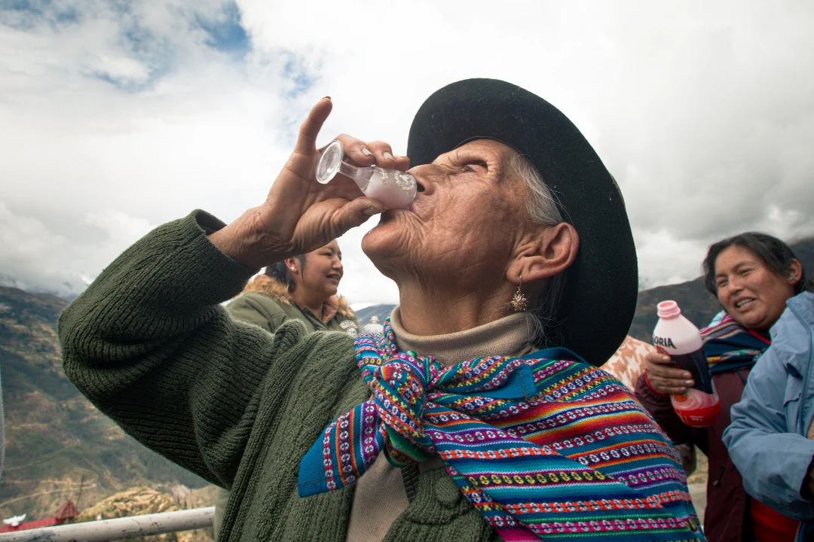
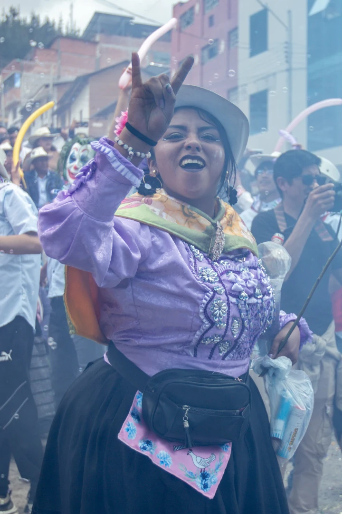
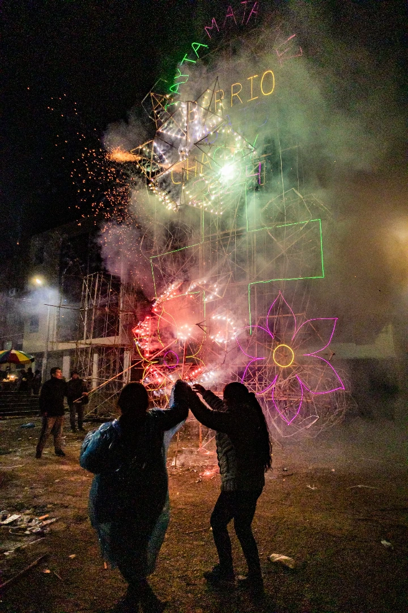

Centro Histórico de Lima. La resistencia en las calles.
"La cámara es un testigo, pero también una herramienta de memoria."
En el fragor de la protesta, el encuadre se vuelve un acto político. Cada rostro capturado es una historia de lucha que se niega a ser borrada por el tiempo oficial.


Retrato de la memoria colectiva.
